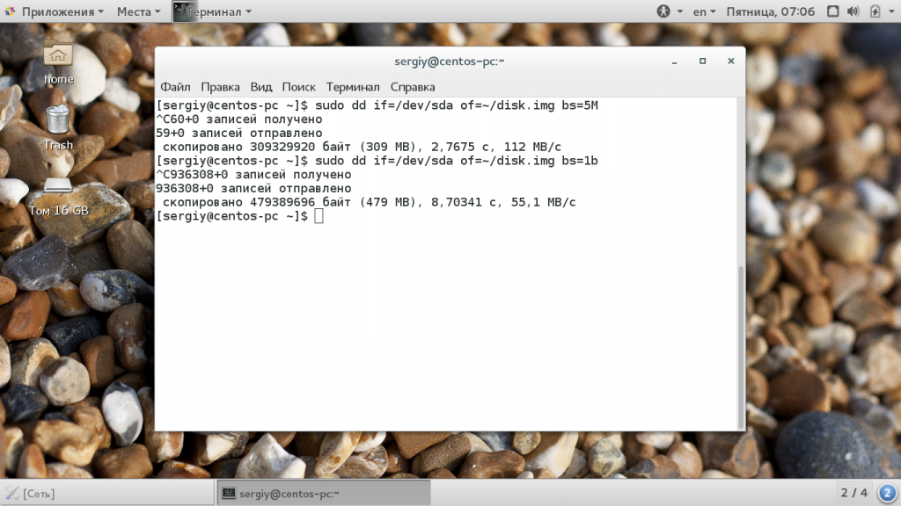
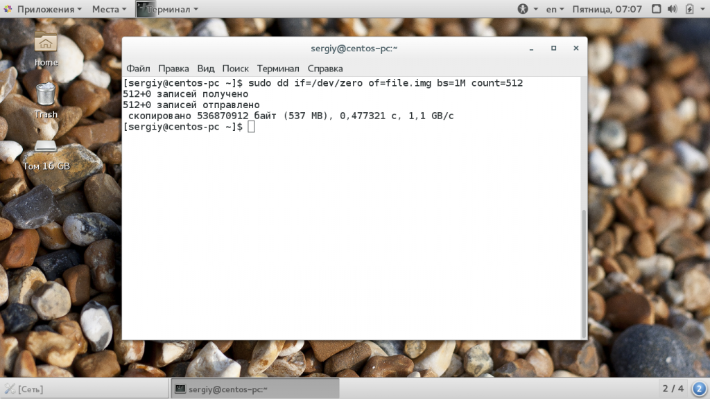

Команда dd Linux
Команды Обновлено: 13 апреля, 2020 15 admin
Довольно часто системным администраторам приходится копировать различные двоичные данные. Например, иногда может понадобиться сделать резервную копию жесткого диска, создать пустой файл, заполненный нулями для организации пространства подкачки или другой виртуальной файловой системы.
Для решения всех этих задач используется утилита dd linux, которая просто выполняет копирование данных из одного места в другое на двоичном уровне. Она может скопировать CD/DVD диск, раздел на диске или даже целый жесткий диск. В этой статье мы рассмотрим что из себя представляет команда dd linux, основные ее опции и параметры, а также как ею пользоваться.
Сначала нужно понять как работает команда dd и что она делает. Фактически, это аналог утилиты копирования файлов cp только для блочных данных. Утилита просто переносит по одному блоку данных указанного размера с одного места в другое. Поскольку в Linux все, в том числе, устройства, считается файлами, вы можете переносить устройства в файлы и наоборот.
С помощью различных опций утилиты можно повлиять на размер блока, а это, в свою очередь, уже влияет на скорость работы программы. Дальше мы рассмотрим основные опции утилиты и ее возможности.
Синтаксис утилиты достаточно необычен, но в то же время очень прост, после того как вы его запомните и привыкнете:
$ dd if=источник_копирования of=место_назначения параметры
С помощью параметра if вам нужно указать источник, откуда будут копироваться блоки, это может быть устройство, например, /dev/sda или файл - disk.img. Дальше, с помощью параметра of необходимо задать устройство или файл назначения. Другие параметры имеют такой же синтаксис, как if и of.
Теперь давайте рассмотрим дополнительные параметры:
Это были все основные опции, которые вам могут понадобиться. Теперь перейдем ближе к практике и рассмотрим несколько примеров как пользоваться утилитой dd linux.
Обычные пользователи используют команду dd чаще всего для создания образов дисков DVD или CD. Например, чтобы сохранить образ диска в файл можно использовать такую команду:
sudo dd if=/dev/sr0 of=~/CD.iso bs=2048 conv=noerror
Фильтр noerror позволяет отключить реагирование на ошибки. Дальше, вы можете создать образ жесткого диска или раздела на нем и сохранить этот образ на диск. Только смотрите не сохраните на тот же жесткий диск или раздел, чтобы не вызвать рекурсию:
dd if=/dev/sda of=~/disk.img
В вашей домашней папке будет создан файл с именем disk1.img, который в будущем можно будет развернуть и восстановить испорченную систему. Чтобы записать образ на жесткий диск или раздел достаточно поменять местами адреса устройств:
dd if=~/disk.img of=/dev/sda
Очень важная и полезная опция - это bs. Она позволяет очень сильно влиять на скорость работы утилиты. Этот параметр позволяет установить размер одного блока при передаче данных. Здесь нужно задать цифровое значение с одним из таких модификаторов формата:
Команда dd linux использует именно такую систему, она сложная, но от этого никуда не деться. Ее придется понять и запомнить. Например, 2b - это 1 килобайт, и 1k, это тоже 1 килобайт, 1М - 1 мегабайт. По умолчанию утилита использует размер блока - 512 байт. Например, чтобы ускорить копирование диска можно брать блоки размером по 5 мегабайт. Для этого применяется такая команда:
dd if=/dev/sda of=~/disk.img bs=5M

Следующий параметр - это count. С помощью него можно указать сколько блоков необходимо скопировать. Например, мы можем создать файл размером 512 мегабайт, заполнив его нулями из /dev/zero или случайными цифрами из /dev/random:
sudo dd if=/dev/zero of=file.img bs=1M count=512

Обратите внимание, что этот параметр указывает не размер в мегабайтах, а всего лишь количество блоков. Поэтому, если вы укажите размер блока 1b, то для создания файла размером 1Кб нужно взять только два блока. С помощью этого параметра также можно сделать резервную копию таблицы разделов MBR. Для этого скопируем в файл первые 512 байт жесткого диска:
sudo dd if=/dev/sda of=mbr.img bs=1b count=1
Для восстановления используйте обычную команду развертывания образа на диск.
Если образ диска слишком большой, можно перенаправить весь вывод нестандартный поток вывода утилиты gzip:
dd if =/dev/sda2 | bzip2 disk.img.bz2
Также можно использовать утилиту dd linux для копирования файлов, хотя это и не является ее прямым предназначением:
dd if=/home/sergiy/test.txt of=/home/sergiy/test1.txt
Как вы знаете, команда dd linux пишет данные на диск непосредственно в двоичном виде, это значит, что записываются нули и единицы. Они переопределяют то, что было раньше размещено на устройстве для записи. Поэтому чтобы стереть диск вы можете просто забить его нулями из /dev/zero.
sudo dd if=/dev/zero of=/dev/sdb
Такое использование dd приводит к тому что весь диск будет полностью стерт.
В этой статье мы рассмотрели как пользоваться dd linux, для чего можно применять эту утилиту и насколько она может быть полезной. Это почти незаменимый инструмент системного администратора, поскольку с помощью нее можно делать резервные копии целой системы. И теперь вы знаете как. Если у вас остались вопросы, спрашивайте в комментариях!